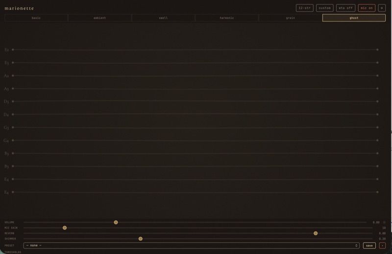
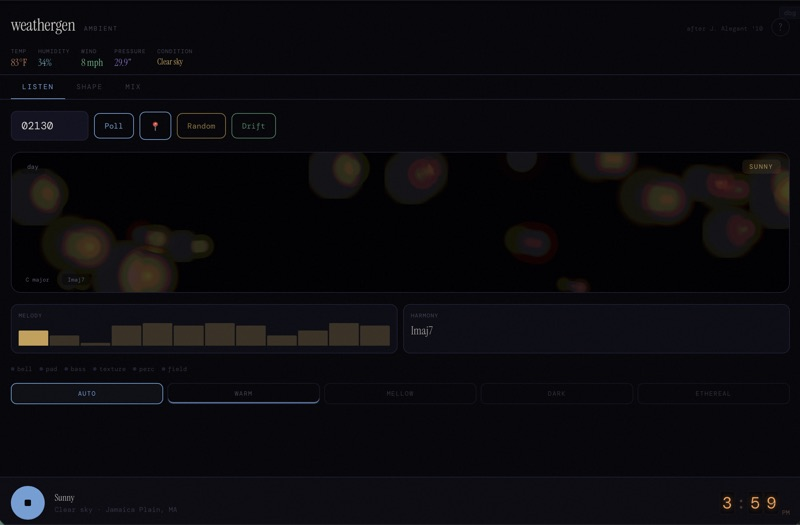
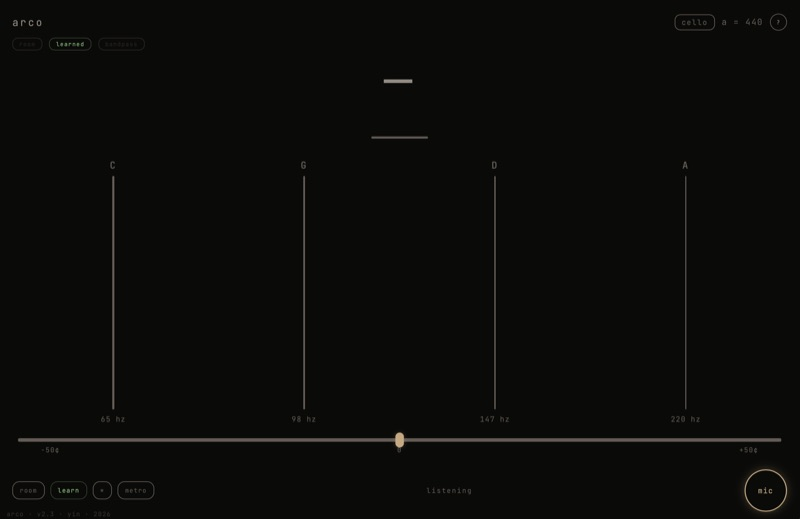
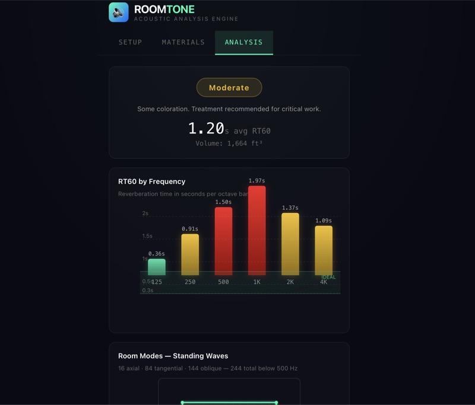
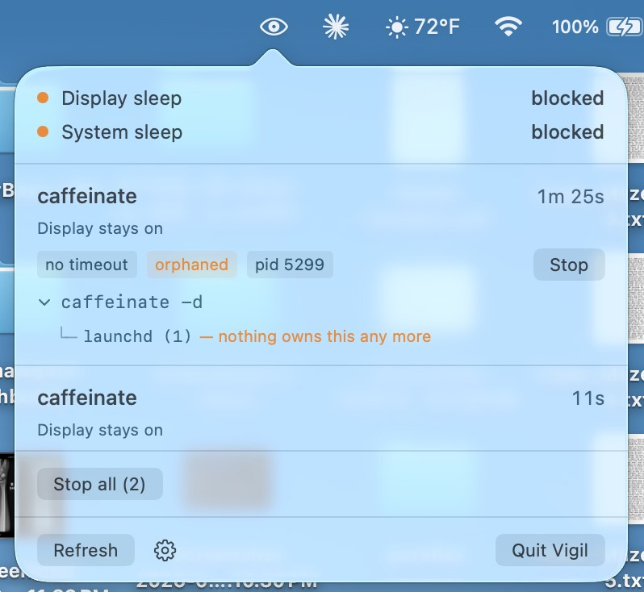
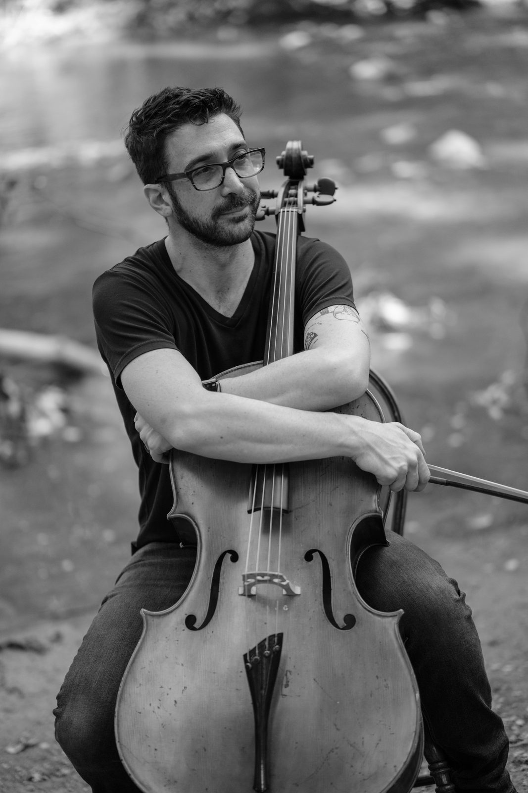

Come find
your sound
Cellist by training. Developer by obsession. Teacher by choice. I run a private studio for cello, guitar, bass, and music technology. I produce, record, and mix with pro-grade gear and a minimal footprint. And I build the web audio tools to make the invisible parts of music visible.
Teach
Private lessons tailored to you
Whether you're picking up an instrument for the first time or refining your craft, lessons are built around your goals, your pace, and the music you actually want to play.
Cello
Classical technique, contemporary repertoire, and ensemble skills for students of all levels.
Guitar
Acoustic and electric — from open chords and fingerpicking to advanced theory and alternate tunings.
Bass
Groove, technique, and musicianship. Learn to lock in with a rhythm section and find your voice.
Music Technology
Synthesis, sampling, DAW production, and audio programming — where music meets code.
Build
Web audio tools and experiments
Tools and instruments for musicians, mostly built for the browser. Some solve real problems — tuning a cello, measuring a room, finding what's keeping a Mac awake. Others exist because the idea wouldn't leave me alone. Most run as progressive web apps; one is a native Mac utility.

Marionette
A resonance instrument for any sound source. Sympathetic strings vibrate to your voice or instrument through Csound physical modeling. Six modes from clean plucks to ghost reverb.

WeatherGen
Generative ambient music shaped by live weather conditions. Brownian melodies, chord crossfades, and drift mode.

Arco
A string tuner that learns your instrument. YIN pitch detection, room noise subtraction, harmonic fingerprinting, and historical pitch reference from baroque to modern.

ROOMTONE
Acoustic analysis app that calculates room response and provides EQ corrections based on floor plans and materials.

Vigil
A macOS menu bar app for the night your Mac won't sleep. It lists what's actually holding it awake, what started that, and gives you a button to stop it. Free and open source.
Play
Recordings and performances
Selected production, performance, and session work across genres.
Hunting Season
Vivienne Marie
Country Boy's Heart Don't Ever Leave
Samantha Jessel
Ella's Ending
Brady Lorince
Chicago
Jaclyn Bradley
Listen on Apple Music, Spotify or YouTube
Second First Love
Mason Mitchell
Record
Pro sound, minimal footprint
Creative production, recording, and mixing built around the music — not the studio. Pro-grade gear, portable setup, honest results.
Production
Full creative direction from arrangement to final master. Collaborative process, your vision first.
Recording
Mobile tracking with studio-quality results. I come to you — your rehearsal space, your living room, wherever the sound is right.
Mixing
Clean, musical mixes that serve the song. No templates — every project mixed from scratch on ears, not presets.
Session & Live
Available for session work and live performance on cello, guitar, and bass. Events, ensembles, pit orchestras, or your next record.
How files move
Every project runs through two small tools I built for this studio. Mixes-in-progress land on your phone as a private player — press play, and pin a note to the exact second you mean. Finished masters arrive as a one-time download that's yours alone. No accounts, nothing to install, nothing public.
Have a project in mind?
Let's Talk
About
The long way
around
Son of musicians, Jordan grew up in Oberlin, Ohio. He began taking cello lessons at an early age and fell in love with the instrument — playing in the Northern Ohio Youth Orchestra and spending summers at Interlochen. But his interests shifted to electric bass in high school, so he set the cello down, moved to Boston, and earned degrees in Electric Bass Performance and Electronic Production and Design from Berklee College of Music.
After graduation, he spent a decade as a recording and gigging musician across New England, adding songwriting, vocals, and guitar to his arsenal before eventually rediscovering the cello.
Today, Jordan performs as a soloist and section leader with the LCCC Civic Orchestra and as a cellist and audio engineer for Riverfire Strings, alongside freelance work throughout the region. He teaches cello, guitar, bass, and music technology through his private studio and Rock Town Music Academy, and produces and records for local artists from a mobile, pro-grade setup. On the side, he builds interactive web audio tools for musicians and educators.
Contact
Let's make something
Whether it's lessons, a gig, a recording, or an idea that's still taking shape — I'm all ears.
jordan@jordanalegant.music